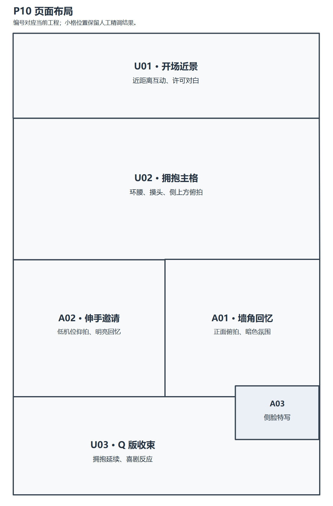
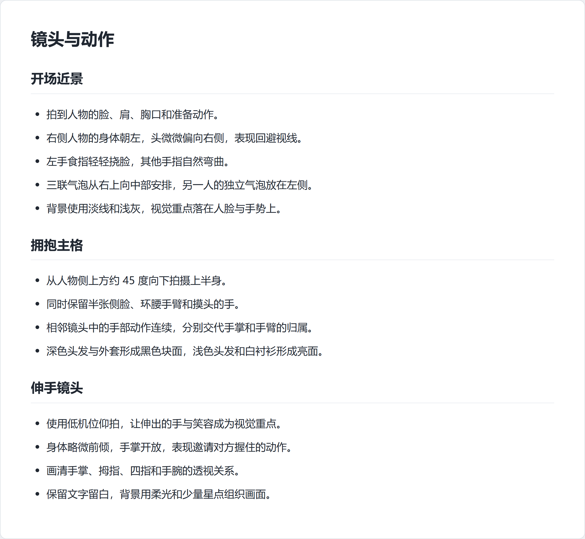

P10：从台词到成稿

这一页用于说明完整协作过程。每一步保留创作者的要求、ChatGPT 的理解、后续修订和对应产物。对话标为原文节选，模型提示词另列。现成素材的操作入口见快速操作。
这套流程采用“统一 → 拆卸 → 再统一”：整页草稿先确定阅读结构，再按选定裁片分别完成画面与带字对象，最后本地装配。每次重试只影响对应素材，已经认可的画面可以保留。减少反复整页生成，也减少了填词和修细节时其他区域出现模糊、斑块或漂移的机会。高质量成稿通过逐格选稿、细化、人工调整和审核来实现。
1. 先打磨台词
目标是确定每一句话的内容、说话人和情绪。第一轮从文字开始。
创作者 · 原文：
好的，现在按照我们的剧本开始P10的台词稿设计吧。请你先写出第一版，我们后续来慢慢修改
ChatGPT · 原文节选：
第一版台词如下：
- 昴：
……行。- 昴：
但只准五分钟。- 昴：
不许得寸进尺。- 尤里乌斯：
谢谢你，昴。- 昴内心：
……又来了。- 昴内心：
只要这家伙露出这种表情，- 昴内心：
我就会想起那时候。- 昴内心：
……真是烦恼呢。- 旁白：
五分钟后。- 昴：
……喂。- 昴：
五分钟已经到了吧？！- 尤里乌斯：
再多抱一会儿。这版的核心节奏是：明确许可 → 无字拥抱 → 往事碎片 → 昴主动心软 → 五分钟后的微喜剧。
创作者 · 原文：
我直接指定序号来修改了： 1.“也不是.....不行吧.....” 3.”你可别想占我便宜。“ 8.“真是麻烦的家伙啊......”
这一页漫画主要营造的是昴刀子嘴豆腐心的事实，也暗示昴其实对尤里乌斯也有很深的情感，只是碍于面子说不出来。
ChatGPT · 原文：
收到老大。这里的情绪核心我会从“明确划界后勉强答应”调整成“嘴上嫌弃、实际上早已心软”：第1句负责含蓄许可，第3句保留昴的面子，第8句则把烦恼落到带感情的纵容上。我会按照漫画逐页工作流把修改保存为新的 v0.2，不覆盖刚才的初稿；这一轮仍停留在台词审核门。
修改时使用“序号＋精确句子＋情绪目的”，可以让 Agent 只改指定内容。文字、标点和强调位置进入文字设计，后续气泡制作按它核对。
2. 把镜头说清楚
这一阶段确定机位、人物位置、表情、动作、手部关系和文字空间。布局可以继续讨论。
ChatGPT · 原文：
好的老大。我会把P10做成“少格数、大主格、两枚往事嵌格、末尾两格微喜剧”的结构：往事不另起一整行，而是嵌在拥抱主格的留白中，这样既完整保留两段过去，也不会切碎当下的情绪。我先按漫画逐页工作流核对P09的落点和正式文字契约，再把第一版详细分镜记录下来；这一轮只做画面设计，不进入线稿生成。
创作者 · 原文：
往事我要另起一行，一行中的左右格，但是这一行要足够宽
创作者随后给出了具体镜头描述。开场描述节选：
1.U01主要用来描绘昴有点害羞和尤里乌斯欲望拉满的张力情景，镜头主要是昴和尤里乌斯的上半身。昴整体在分镜右半边，昴身体朝左边，但是头偏向右边，脸颊微红，还有一滴因为害羞而出现的汗。昴的左手的食指挠着脸颊，一副有点紧张的样子。
ChatGPT 对气泡归属的分析 · 原文节选：
此外，两组气泡不能都放在右边：
- 昴的三联气泡放在右上至中间。
- 尤里乌斯的“谢谢你，昴。”应放在左上或左侧，尾巴指向尤里乌斯。
这样才能保持说话人清楚，也符合右至左的阅读顺序。
创作者进一步修订镜头范围与文字形式 · 原文节选：
1.可以画出尤里乌斯弯腰，但是不要画出“屈膝”，我们U02主要是对两人拥抱的上半身子刻画，而不是全身刻画 2.A02的台词可以改成两段，“和我成为朋友吧，我会保护你的。”旁边还有一句“以后别再一个人躲起来了”。这两句话都是纵向摆排列，而且不需要气泡。
讨论后的说明把主格、回忆层、特写和收束格分别安排，再逐格交代取景和动作。


完整分镜描述附件保留创作者当时的表达方式；分镜样章进一步讲解如何整理这些描述。
3. 独立画草稿，比较表演
每版结构草稿独立生成，用于选择框架、镜头和表情。草稿保留空白气泡与文字空间，正式文字在后面的独立对象中完成。
| 构图候选 | 选定框架 |
|---|---|
 |
 |
结构阶段可以继续修订景别、身高、服饰和动作。确定后，分别记录框架与每格内容来源。提示词附录保留这一步的归档提示词。
4. 框架和内容分别选择
为所有版本生成编号总览后，先比较页面框架的阅读节奏，再逐格挑选表情、动作和机位。P10 有七版草稿，最终框架与各格内容分别选定。

创作者 · 原文：
正式分镜为：A03,B04,C06,D06,E02,F07 正式分镜框架为：v0.6 请你先把对应分镜截下来，稍后我再指定分镜来进行正式版重绘
ChatGPT · 原文：
我会依照页面工作流把这次选择正式锁定：框架使用 v0.6，逐格内容分别来自 A03、B04、C06、D06、E02、F07。接下来只做无损截图和来源记录，不进入正式重绘；每张截图都会保留足够的边界与构图信息，供老大下一步逐格指定修改。
选定框架来自第六版，各格表演来自不同候选。编号在草稿、裁片和正式素材之间保持对应。
| 正式画格 | 内容候选 | 保留的镜头 |
|---|---|---|
| U01 | A-03 | 开场双人近景 |
| U02 | B-04 | 拥抱主格 |
| A01 | C-06 | 暗色回忆 |
| A02 | D-06 | 明亮回忆 |
| A03 | E-02 | 表情特写 |
| U03 | F-07 | Q 版收束 |
裁片放在 storyboards/selected/，完整正式画面放在 assets/panels/。框架用于初始化多边形，逐格参考控制表演。
分镜设计与六格对照展示全部候选编号页、当前工程编号结构图，以及每一格从选定线稿裁片到正式原图的变化。
5. 严格逐格重绘，留出调整余量
初次正式重绘偏离了选定动作，创作者指出了这一点。
创作者 · 原文：
重绘的U01和U02人物动作和表情已经和线稿已经出现出入了，请你严格按照线稿再次重绘一版。一样的要求，在保证每一个分镜都可以正确放进分镜的同时，再画得大一点
ChatGPT · 原文：
明白，这一轮不再对动作和表情做任何“加强解释”。我会把锁定线稿视为严格姿势蓝图：人物位置、头部角度、脸距、视线、嘴形、手势、拥抱关系和摄影角度全部照线稿复现；P09只负责校正人物长相与服装，不参与改构图。两张都从各自线稿独立重绘为 v02，不使用刚才的成稿作为参考。
| 选定单格草稿 | 正式分镜原图 |
|---|---|
 |
 |
 |
 |
构图参考负责动作与表情，完成稿参考负责辨识度和画风。增加画布余量时，保持镜头距离和人物关系，向外补足可用于取景的内容。正式分镜独立保存，不带气泡、文字和页面边框。其余 A01、A02、A03、U03 的完整对照也按固定编号展示。
逐格重绘提示词展示参考职责、动作保护、画布余量、背景与灰阶约束。
6. 一次生成带字对象，再按移动意图拆分
创作者 · 原文节选：
接下来我想的是按照之前v0.6 版本的气泡来一次性生成带文字的气泡，然后再把气泡和文字一起以气泡对象的形式装载进入手动编辑器中，所以请你严格审核V0.6 的气泡样式和我们的画面契约，把每一个文字气泡都画准确。尤其是A01的气泡实际上是昴的心理活动，所以小圈的朝向就应该是朝着上面U02的昴，而不是旁边的少年尤里乌斯。
ChatGPT · 原文节选：
U01、U02 的三组“气泡＋文字”一体对象第一版已经生成并归档：
C01：昴的三联许可对白C02：尤里乌斯的感谢对白C03：昴的三联内心活动
第一批曾把同一人的三段心理活动合成一张图。创作者希望两组能分别调节。
创作者 · 原文：
U02的那两个气泡应该单独作为一个对象来调整，而不是和在一起，你把他们分开一下
ChatGPT · 原文：
明白老大，U02 的布局应该拆成两个可独立移动的对象：
- 右侧双联心理气泡：承载“……又来了。”和“只要这家伙露出这种表情，”
- 左侧独立心理气泡：承载“我就会想起那时候。”
我会按漫画单页流程做一次无损拆分，不重新调用 Image，避免文字和气泡轮廓再次漂移；原来的合并版继续保留为历史候选。
| 右侧心理对象 | 左侧心理对象 |
|---|---|
 |
 |
最终 P10 有 10 个对象，包括三联对白、独立心理气泡、无框双列文字、时间旁白和炸裂对白。每个对象的外部保持真实透明，气泡内部保留白色，普通字号一致，在指定情绪高点增强笔势。
| 对象 | 用途 | 可单独调整的内容 |
|---|---|---|
| C01 | 开场对白 | 三联许可对白 |
| C02 | 开场对白 | 单枚回应 |
| C03A | 心理活动 | 右侧双联 |
| C03B | 心理活动 | 左侧独立一句 |
| C04 | 心理活动 | 向上指向的气泡，末尾五点 |
| C05 | 无框文字 | 两列纵排文字 |
| C06 | 时间旁白 | 小方框 |
| C07 | 低声对白 | 小气泡 |
| C08 | 情绪对白 | 炸裂气泡 |
| C09 | 收束对白 | 圆润气泡 |
创作者还指定了一处标点细节。
创作者 · 原文：
A01气泡里面省略号留有5个点就够了，下面多余的你帮我覆盖掉，其他的都还挺不错的
练习包提供已经拆分、已经修正标点的最终对象。其对象边界、尾巴方向与情绪设计见文字对象清单。模型提示词附录展示实际调用与归档记录的区别。
带字气泡样式详解将实际对象与关键提示词并排说明：三联对白用连接关系控制阅读节奏，心理活动用圆珠尾标明归属，无框文字和旁白框分别控制透明度与排列，炸裂对白用笔压和整体节奏提高情绪张力。
7. Agent 初始化，创作者精调
创作者 · 原文：
好的，现在你可以把各个分镜和气泡装载进入手动调节器了，请你进行初始化装载之后，由我来手动调整
ChatGPT · 原文：
好的老大。我会按漫画分页工作流，把 P10 已确认的六个正式分镜与当前 10 个带字气泡对象装入手动调节器：以 v0.6 框架初始化位置、缩放、裁切与层级，使用刚修复的 C04 五点版；只建立新的 P10 工作副本，不改动素材原图。初始化完成后我会先做工程结构、资源路径和高分辨率导出配置检查，再交给你微调。
历史装配使用旧版工具。练习包另用新版原生编辑器装载完整图片和对象，保留独立取景、气泡范围、前后遮挡和高清输出。
演示时打开 projects/reference.json，另存为 work/working.json 后继续调整。参考页采用创作者已确认的新原生编辑器布局，完整保留取景、框架、气泡大小、位置、范围和前后关系，输出设置为 2×。projects/start.json 另存历史初始化布局，用于比较 Agent 装载与人工精调的变化。
快速操作说明直接操作，Agent 附录给出真实 CLI 初始化、校验和导出入口。
8. 保存、高清导出与确认
历史初始化记录曾写 2×、2048×3072，创作者确认的正式输出实际为 2560×3840。导出后读取实际文件尺寸，可以避免把预设当成最后结果。
ChatGPT 的历史归档回执 · 原文节选：
- 尺寸：
2560 × 3840- 源稿与归档 SHA-256 完全一致
- P01～P10 十张正式页全部齐全
- 历史候选、逐格素材、气泡和编辑工程均完整保留
本次练习参考 PNG 与 reference.json 由同一次本地渲染配对，保留当前 2× 设置，P10 实际为 2048×3072。历史正式成品为 2560×3840，单独保留当时人工调整的结果。两者可以对照阅读，各自的来源与用途清楚区分。
完成自己的漫画时，保存匹配的工作工程、完整素材、导出尺寸和确认记录。人工修复后的最终图像成为归档依据，按原格式复制并比较 SHA-256。
从这个案例复用什么
先用具体语言讨论情绪、镜头和动作，再锁定文字与视觉设计。选格时分开框架与表演，正式画面和文字分别保存。Agent 做初始化，创作者保留最后一轮直接编辑与确认。
案例素材的练习用途见使用说明。实际绘画练习使用自己的角色、画风和素材。